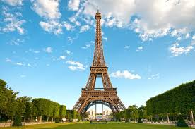
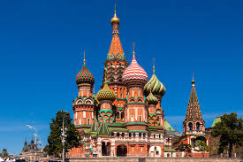
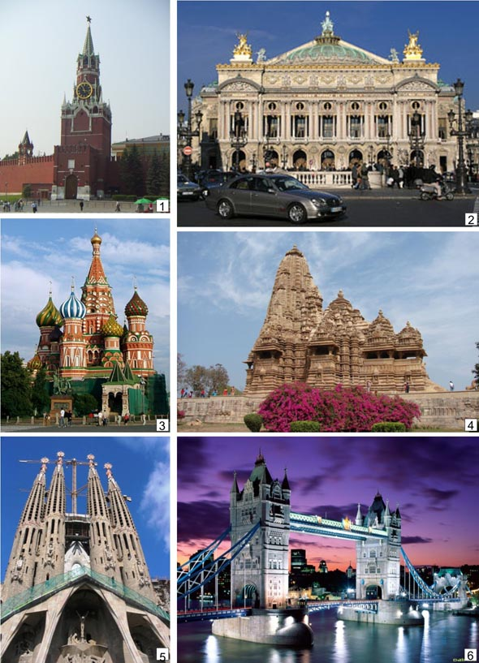
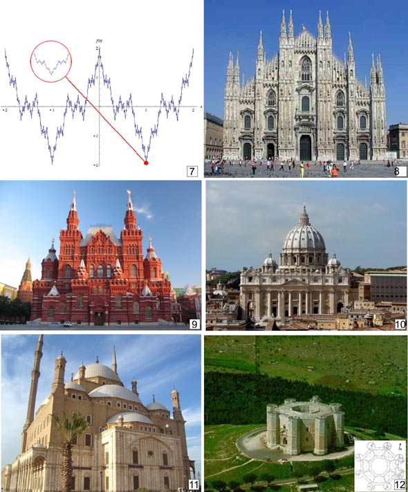
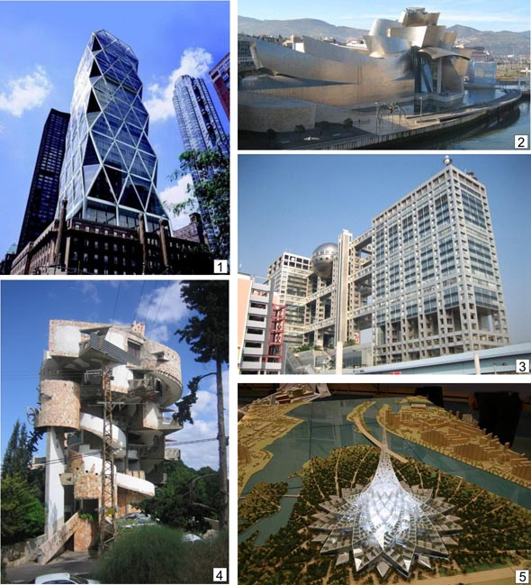
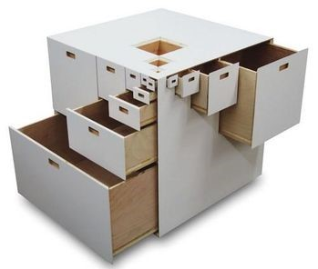

Фракталы в архитектуре
Фрактальный принцип развития природных и геометрических объектов проникает вглубь архитектуры и как образ внешнего решения объекта, и как внутренний принцип архитектурного формообразования.
В архитектуре применяются геометрические фракталы. Основными представителями этой группы являются такие объекты, как: кривая Пеано, снежинка Коха, треугольник Серпинского, пыль Кантора, «дракон» Хартера-Хейтуэя и т.д.. Все они получены путем повторений определенной последовательности геометрических построений с использованием точек и линий.
Повторение законов природы в архитектурном формообразовании позволило нашим предшественникам на интуитивном уровне создать фрактальные здания и сооружения
| Эйфелева башня - замечательное творение конструктора Гюстафа Эйфеля. Это самая известная архитектурная достопримечательность Парижа, известная как символ Франции, воздвигнутая на Марсовом поле. Она является самым узнаваемым и высоким зданием в Париже, её высота вместе с новой антенной составляет 324 метра, что примерно равняется с домом в 81 этаж! На рисунке хорошо видны геометрические элементы самоподобия, характерные для фракталов. |
 | Храм Василия Блаженного в Москве
Расположение и размеры куполов многоглавых церквей, условно показанные в одной плоскости плана с осевой симметрией, также имеют прообразом фрактальную структуру (типа «салфетки» Серпинского с кругами). Спиралеподобные формы, отражающие один из распространенных фрактальных алгоритмов в природе, используются и в искусственной среде, включая архитектуру и дизайн (спиральный декор храма Василия Блаженного, металлические узоры оград и решеток, произведения декоративно-прикладного искусства). |
 |
Другие архитектурные сооружения:
|
 |
|
 |
Фрактальность (сознательная) современных архитектурных форм:
|
 | Дизайнеры со всего мира начали использовать в своих работах замечательные фрактальные структуры, только недавно описанные видными математиками. Использование фракталов поставило практически все направления современного дизайна на новый уровень. Привнесение фрактальных структур увеличило во многих случаях как визуальную, так и функциональную составляющие дизайна. Дизайнер Такеси Миякава в детстве мечтал стать математиком. Иначе как объяснить этот предмет мебели: тумбочка Fractal 23 содержит 23 ящика самых разных размеров и пропорций, которые как-то ухитряются уживаться между собой внутри кубического корпуса, заполняя почти всё доступное им пространства. |
 |